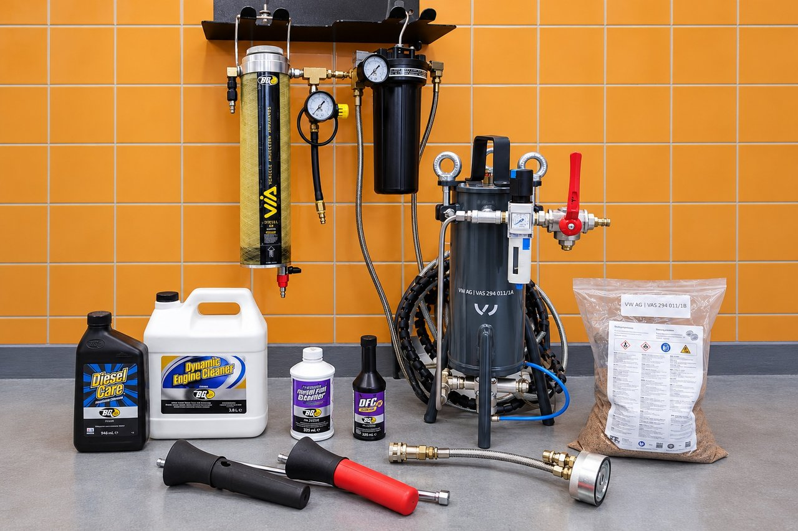

Dekarbonizace motoru
J&S servis – nezávislý specializovaný autoservis vozidel Volkswagen, Audi, Škoda, SEAT a CUPRA od roku 1994.
Dekarbonizace motoru – cílené chemické a mechanické čištění podle konstrukce a technického stavu motoru.
U benzínových a naftových motorů řešíme karbonové a další provozní úsady v olejové, palivové a sací soustavě. Vhodný postup volíme podle konkrétního motoru, příznaků a výsledků kontroly. Ne každý způsob čištění je vhodný pro každé vozidlo.
- Chemické čištění olejového, palivového a sacího nebo vstřikovacího systému přípravky BG Products
- Intenzivní čištění olejové soustavy přípravkem BG Dynamic Engine Cleaner
- Mechanické odstranění karbonových úsad ze sacích ventilů a kanálů čisticím granulátem se současným odsáváním pomocí zařízení VW AG (VAS 294 011/1A)
Cena
- BG – čištění olejového systému: od 1 500 Kč včetně DPH.
- BG – přístrojové čištění vstřikovacího systému: od 2 300 Kč včetně DPH.
- BG – chemické čištění sání: od 4 200 Kč včetně DPH.
- Mechanické čištění sacích ventilů a kanálů granulátem: individuální kalkulace podle rozsahu práce, skutečně spotřebovaného granulátu, demontáže a zpětné montáže sacího potrubí a dalšího materiálu.


Jak dekarbonizace probíhá
Chemické čištění BG Products: podle zvoleného postupu a vhodnosti pro daný motor provádíme čištění olejového, palivového, vstřikovacího nebo sacího systému. Pro intenzivní čištění olejové soustavy používáme BG Dynamic Engine Cleaner. Jednotlivé postupy nejsou vzájemně zaměnitelné a volíme je podle konkrétního stavu vozidla.
Mechanicky odstraňujeme karbonové úsady ze sacích ventilů a kanálů čisticím granulátem se současným odsáváním, a to pomocí zařízení VW AG (VAS 294 011/1A). Zpravidla je k tomu potřeba sejmout sací potrubí.
U mechanického čištění granulátem připravujeme individuální kalkulaci podle rozsahu prací, spotřeby granulátu, demontáže a zpětné montáže sacího potrubí a potřebného materiálu. Přesnou spotřebu granulátu známe až po vyčištění.
Co je důležité vědět: dekarbonizace je cílený servisní zásah, nikoli univerzální oprava motoru. Neodstraní mechanické opotřebení ani všechny příčiny zvýšené spotřeby oleje, nepravidelného chodu nebo ztráty výkonu. Před zahájením doporučíme vhodný postup a předem s vámi projednáme rozsah i předpokládanou cenu.
Před objednáním
Před objednáním si ověřte, který konkrétní postup BG kalkulace zahrnuje a jak jsou v ní uvedeny navazující náplně a filtry. U intenzivního čištění nelze z obecné ceny čištění olejového systému automaticky odvozovat cenu celého procesu. Vhodnost metody se posuzuje podle konkrétního motoru a zjištěného stavu.